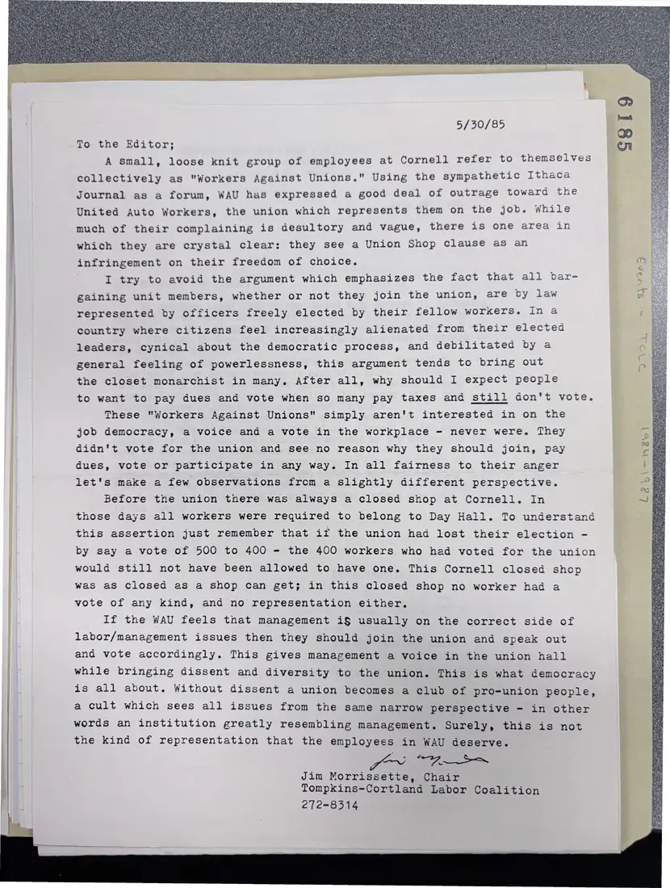

Letter, 1 page
Jim Morrissette's letter to the editor on “Workers Against Unions” at Cornell
May 30, 1985
The chair answers a group of Cornell employees who called themselves “Workers Against Unions” during the UAW's representation of Cornell service workers, defending the union as the workers' own democratic voice.
Download or cite this itemPages


(open zoom view)Read the page text (machine-read, mostly readable)
This text was generated automatically from the photograph and has not been corrected. The image is the authoritative record.
5/30/85 To the Editor; A small, loose knit group of employees at Cornell refer to themselves collectively as "Workers Against Unions." Using the sympathetic Ithaca Journal as a forum, WAU has expressed a good deal of outrage toward the United Auto Workers, the union which represents them on the job. while much of their complaining is desultory and vague, there is one area in which they are crystal clear: they see a Union Shop clause as an infringement on their freedom of choice. I try to avoid the argument which emphasizes the fact that all bar- gaining unit members, whether or not they join the union, are by law represented by officers freely elected by their fellow workers. In a country where citizens feel increasingly alienated from their elected leaders, cynical about the democratic process, and debilitated by a general feeling of powerlessness, this argument tends to bring out the closet monarchist in many. After all, why should I expect people to want to pay dues and vote when so many pay taxes and still don't vote. These "Workers Against Unions" simply aren't interested in on the job democracy, a voice and a vote in the workplace - never were. They didn't vote for the union and see no reason why they should join, pay dues, vote or participate in any way. In all fairness to their anger let's make a few observations from a slightly different perspective. Before the union there was always a closed shop at Cornell. In those days all workers were required to belong to Day Hall. To understand this assertion just remember that if the union had lost their election - by say a vote of 500 to 400 - the 400 workers who had voted for the union would still not have been allowed to have one. This Cornell closed shop was as closed as a shop can get; in this closed shop no worker had a vote of any kind, and no representation either. If the WAU feels that management i§ usually on the correct side of labor/management issues then they should join the union and speak out and vote accordingly. This gives management a voice in the union hall while bringing dissent and diversity to the union. This is what democracy is all about. Without dissent a union becomes a club of pro-union people, a cult which sees all issues from the same narrow perspective - in other words an institution greatly resembling management. Surely, this is not the kind of representation that the employees in WAU deserve. I i Jim Morrissette, Chair Tompkins-Cortland Labor Coalition 272-8314 S819 Lab\~navl
See something wrong, or recognize a person or event? Send a correction. If you hold rights in this item or think it should not be public, write to the same address.